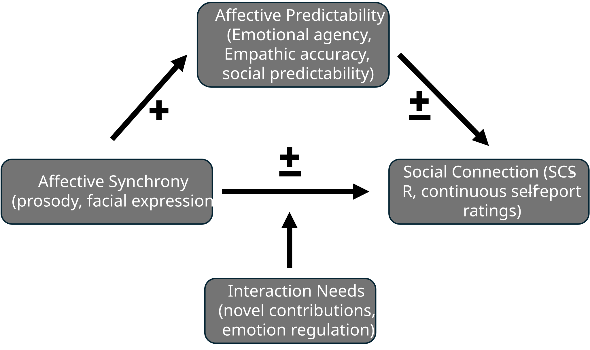

When people interact, they must coordinate a cascade of social cues — adapting, moment by moment, to each other's words, facial expressions, body language, and actions — each of which may vary from culture to culture, or even person to person. Our lab uses rigorous experimental paradigms alongside naturalistic studies to understand this process, drawing on computational methods including natural language processing, cluster analyses, and time series analyses.
Click on the project icons to learn more.
We study the moments in interaction when people synchronize with each other, and we also study the moments when they don't. Rather than assuming that heightened synchrony is always beneficial, our work investigates how moving between moments of synchrony and asynchrony may actually help people communicate. We're also interested in the individual differences that can make it easier or harder to achieve synchrony.
Our research has so far tracked synchrony in eye blink rates, pupil dilation, and facial expressions. We connect these physiological and behavioral signals to interaction outcomes like improved memory, engagement, and rapport.
Read about this project in Psychology Today
We found that individuals whose pupils were more tightly synchronized with a rhythmic auditory sequence were also more likely to synchronize their pupil dilations and constrictions with the pupil dynamics of an individual telling a story. This work suggests that the tendency to synchronize attention is a reliable individual difference that varies in the human population, manifests across levels of complexity (from highly structured to continuously varying dynamics) and predicts synchrony between minds.
Successful interaction requires that we both express our own emotions and make predictions how our partner is feeling, often simultaneously. We study how facial expressions are both produced and perceived during real interactions and how these moment-to-moment dynamics shape our ability to accurately read a partner's emotional state.

The Social Coordination Lab, in collaboration with Dr. Paula Niedenthal, has received an NSF award to study the role of affective synchrony in social interaction. When people mirror each other's facial expressions and vocal cues, this synchrony may act as a kind of shorthand that reduces the complexity of the social environment and makes partners' emotions more predictable. We study whether this synchrony helps people make more accurate inferences about what their partner is feeling.
But perfect mirroring isn't always the goal. Interactions also require moments of departure — when topics shift, surprises happen, or something novel needs to be expressed. We're equally interested in when and how breaking from synchrony can still preserve, or even strengthen, feelings of connection.
Facial expressions are central to how we coordinate and influence one another when we communicate, yet the form and meaning of these expressions vary in surprisingly nuanced ways across individuals and cultures. Existing theories of facial expression struggle to account for this variation, largely because they rest on two limiting assumptions: that expressions fall into a fixed set of basic emotion categories, and that a handful of still images, posed faces, and non-representative samples can stand in for the full range of human facial behavior.
This project takes a different approach. We capture facial expressions as they naturally unfold in real interactions, across a diverse sample of individuals. The setup is straightforward: groups of four people who already know each other play a series of games while we record their spontaneous expressions. As we collect this data, we are also developing data-driven methods to identify meaningful clusters within this rich dataset and validate them against human judgment.
Human communication unfolds across multiple channels at once. Facial expressions, eye contact, speech, and body movement all work together to build a successful conversation. These channels interact within a single person (think of the precise coordination of expression, head angle, and gaze that produces a withering stare) and between people (the way that same stare might cause a partner to drop their eyes and hunch their shoulders). We study how these cross-channel exchanges, within and between people, shape the success of social interaction.
Read about this project in Scientific American and Forbes
We measured pupillary synchrony and eye contact between dyads engaged in unstructured conversation. When dyads made eye contact, their pupils were highly synchronized. During each instance of eye contact, however, we found that participants desynchronized their pupils. Specifically, we found that eye contact commences as synchrony peaks and predicts an immediate and subsequent decline in synchrony until eye contact breaks. We also found these moments of eye contact were positively correlated with dyads' ratings of engagement during the conversation. This relationship suggests that eye contact signals when attentional synchrony is high, and perhaps facilitates movements into and out of attentional synchrony in a way that sustains dyads' mutual engagement.